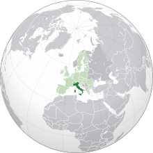

Italian cuisine is food typical of Italy. It has developed through centuries of social and economic changes, with roots stretching to antiquity.
Significant changes occurred with the discovery of the New World and the introduction of potatoes, tomatoes, capsicums, maize and sugar beet, this last introduced in quantity in the 18th century. Italian cuisine is known for its regional diversity, especially between the north and the south of the Italian peninsula. It offers an abundance of taste, and is one of the most popular and copied in the world.[7] It influenced several cuisines around the world, chiefly that of the United States.[8]
Italian cuisine is generally characterized by its simplicity, with many dishes having only two to four main ingredients. Italian cooks rely chiefly on the quality of the ingredients rather than on elaborate preparation. Ingredients and dishes vary by region. Many dishes that were once regional have proliferated with variations throughout the country.